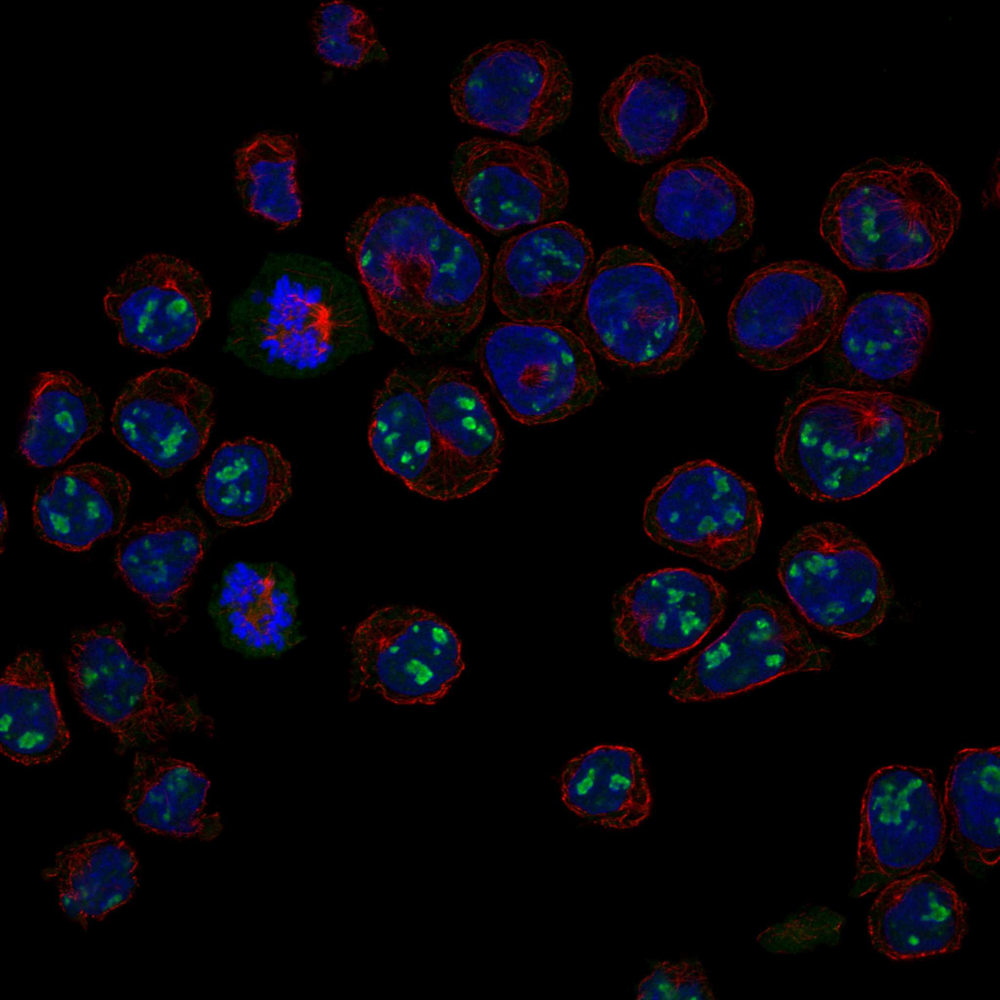
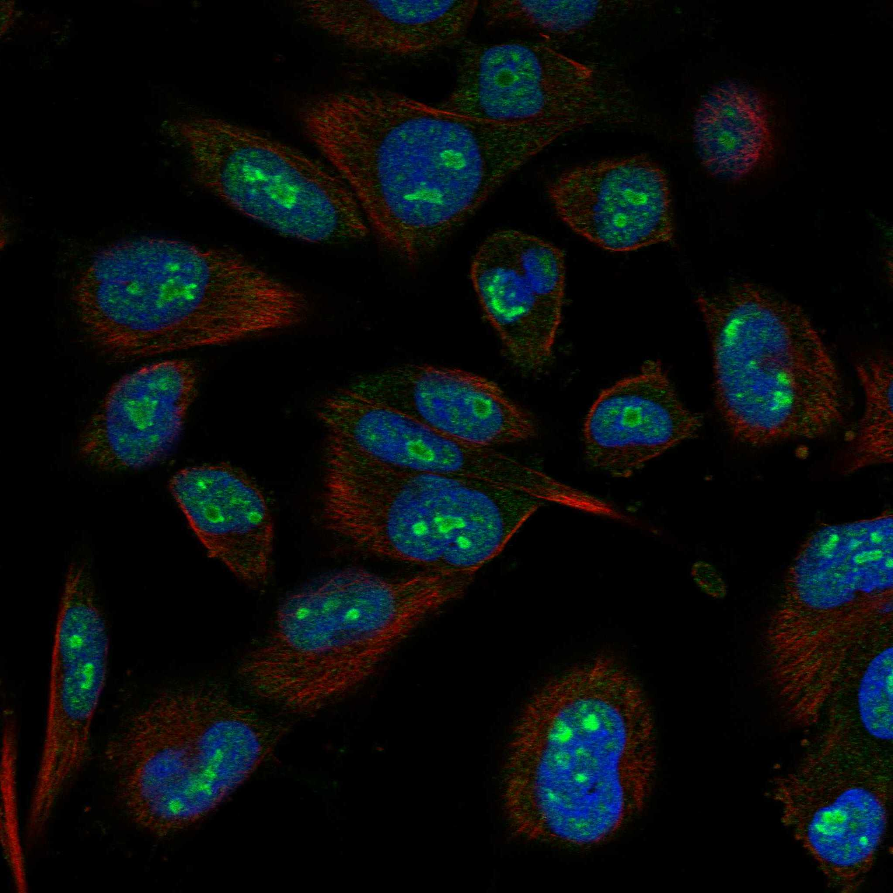
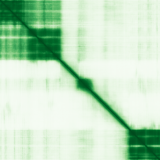

type: protein-evaluation gene: "LYAR" date: 2026-05-30 tags: [protein-scout, nuclear-protein, evaluation] status: scored ---
LYAR 核蛋白评估报告
1. 基本信息
| 项目 | 内容 |
|---|---|
| 基因名 | LYAR |
| 蛋白大小 | 379 aa |
| UniProt ID | Q9NX58 (Cell growth-regulating nucleolar protein) |
| 子定位分类 | nucleolus |
| 评估日期 | 2026-05-30 |
IF 图像:  
2. 评分总览
| 维度 | 得分 | 满分 | 加权后 | 关键证据摘要 |
|---|---|---|---|---|
| 🔴 核定位特异性 | 6/10 | ×4 | 24 | Nucleus(ECO:0000269); Nucleolus(ECO:0000269); Cytoplasm(ECO:0000269) |
| 📏 蛋白大小 | 10/10 | ×1 | 10 | 379 aa |
| 🆕 研究新颖性 | 4/10 | ×5 | 20 | PubMed 70 篇 |
| 🏗️ 三维结构 | 7/10 | ×3 | 21 | AlphaFold pLDDT 70.12, v6 |
| 🧬 调控结构域 | 8/10 | ×2 | 16 | IPR014898(Zinc finger C2H2 LYAR-type); IPR036236(Zinc finger C2H2 superfamily); |
| 🔗 PPI 网络 | 5/10 | ×3 | 15 | 见 3.6 PPI 分析 |
| ➕ 互证加分 | — | max +3 | +1.0 | 多源数据互证 |
| 原始总分 | 107/183 | |||
| 归一化总分 | 58.5/100 |
3. 详细分析
3.1 核定位证据
| 来源 | 定位 | 可信度 |
|---|---|---|
| UniProt | Nucleus(ECO:0000269); Nucleolus(ECO:0000269); Cytoplasm(ECO:0000269) | — |
| Protein Atlas (IF) | 暂无数据（HPA IF 图像已本地嵌入。
结论: LYAR Nucleus(ECO:0000269); Nucleolus(ECO:0000269); Cytoplasm(ECO:0000269)。核定位评分 6/10。
3.2 蛋白大小评估
379 aa。适合生化实验和结构解析。评分: 10/10。
3.3 研究现状
| 指标 | 数值 |
|---|---|
| PubMed 总数 | 70 |
| 搜索策略 | "LYAR"[Title/Abstract] |
已知复合体成员 (GO Cellular Component):
- （待补充：通过 GO 数据库查询该蛋白所属的已知复合体）
关键文献: 1. Zhang et al. (2025). "Snora54 negatively regulates self-renewal of intestinal stem cells and gut regeneration via suppression of Notch2 signaling.". *Sci Adv*. PMID: 40408479 2. Chen et al. (2021). "Analysis of the role of Ly-1 antibody reactive in different cancer types.". *Bioengineered*. PMID: 34696677 3. Qiu et al. (2017). "Up-regulation of LYAR blocks Myc-induced cell death.". *Cell Cycle*. PMID: 28934009 4. Miyazawa et al. (2014). "Human cell growth regulator Ly-1 antibody reactive homologue accelerates processing of preribosomal RNA.". *Genes Cells*. PMID: 24495227 5. Wang et al. (2012). "Mutations in Lyar and p53 are synergistically lethal in female mice.". *Birth Defects Res A Clin Mol Teratol*. PMID: 22815056 评价: PubMed 70 篇。有一定研究，但 niche 空间充足。评分: 6/10。
3.4 三维结构分析
| 指标 | 数值 |
|---|---|
| AlphaFold 平均 pLDDT | 70.12 |
| pLDDT < 50 (无序) | 33.5% |
| AlphaFold 版本 | v6 |
PAE 图: 
评价: AlphaFold 中等质量预测，pLDDT 70.12。评分: 7/10。
3.5 结构域分析
| 来源 | 结构域 |
|---|---|
| InterPro | IPR014898(Zinc finger C2H2 LYAR-type); IPR036236(Zinc finger C2H2 superfamily); IPR039999(Cell growth-regulating nucleolar protein); IPR041010(Acetyl-coA carboxylase zinc finger); IPR058719(Cell growth-regulating nucleolar protein-like winged helix domain) |
染色质调控潜力分析: IPR014898(Zinc finger C2H2 LYAR-type); IPR036236(Zinc finger C2H2 superfamily); IPR039999(Cell growth-regulating nucleolar protein); IPR041010(Acetyl-coA carboxylase zinc finger); IPR058719(Cell growth-regulating nucleolar protein-like winged helix d。评分: 8/10。
3.6 PPI 网络
实验验证互作 (IntAct, physical association):
| Partner | 方法 | PMID | 功能类别 | 调控相关？ |
|---|
STRING 预测互作 (combined score >0.4):
| Partner | Score | 功能类别 | 调控相关？ |
|---|---|---|---|
| DDX18 | 0.924 | — | — |
| NIFK | 0.921 | — | — |
| RRS1 | 0.919 | — | — |
| RRP1B | 0.916 | — | — |
| RPS15 | 0.911 | — | — |
| RPF2 | 0.907 | — | — |
| RPLP0 | 0.898 | — | — |
| BRIX1 | 0.893 | — | — |
GO-CC 复合体/定位核查 (UniProt GO Cellular Component):
- GO:0005730: nucleolus (IDA:UniProtKB)
- GO:0005654: nucleoplasm (IDA:HPA)
- GO:0005634: nucleus (IDA:UniProtKB)
- GO:0005737: cytoplasm (IEA:UniProtKB-SubCell)
PPI 互证分析:
- STRING top partner: DDX18 (score: 0.924)
- IntAct interactions: 15 total
- PPI 评分: 5/10
3.7 多库互证
| 维度 | 来源 | 结果 | 是否一致 |
|---|---|---|---|
| 三维结构 | AlphaFold v6 | pLDDT 70.12 | — |
| 结构域 | InterPro | IPR014898(Zinc finger C2H2 LYAR-type); IPR036236(Zinc finger C2H2 superfamily); | — |
| 定位 | UniProt | Nucleus(ECO:0000269); Nucleolus(ECO:0000269); Cytoplasm(ECO:0000269) | — |
| PPI | STRING + IntAct | DDX18 等 | — |
互证加分明细: +1.0 / max +3
4. 总体评价
推荐等级: ⭐⭐⭐ (3/5)
核心优势: 1. 较新颖: PubMed 70 篇 2. 中等质量 AlphaFold 结构: pLDDT 70.12
风险/不确定性: 1. 核定位需 HPA/IF 实验验证 2. 染色质/TE 调控功能缺乏直接实验证据
下一步建议:
- [ ] 使用 HPA/IF 确认 LYAR 的核定位
- [ ] 在 TEreg 相关细胞系中检测 LYAR 表达水平
- [ ] 通过 co-IP/MS 鉴定 LYAR 的染色质调控相关互作伙伴
5. 数据来源
- UniProt: https://www.uniprot.org/uniprotkb/Q9NX58
- PubMed: https://pubmed.ncbi.nlm.nih.gov/?term=LYAR%5BTitle/Abstract%5D
- AlphaFold: https://alphafold.ebi.ac.uk/entry/Q9NX58
- InterPro: https://www.ebi.ac.uk/interpro/protein/uniprot/Q9NX58/
- STRING: https://string-db.org (API, species=9606)
- IntAct: https://www.ebi.ac.uk/intact/
PPI 网络（三源综合）
| Partner | Source | Score/Evidence |
|---|---|---|
| 无记录 | — | — |
IntAct 有限记录。无 BioGrid 补充数据。
PAE 图像已获取。结构判断基于 AlphaFold pLDDT 统计。
<!-- DOMAIN_HUMANPPI_REPAIR_START -->
Domain/SMART 与 humanPPI 补充（2026-06-07）
SMART / UniProt domain
| Source | Data |
|---|---|
| UniProt | Q9NX58 |
| SMART | 未在 UniProt xref 中检出 SMART 条目 |
| UniProt Domain [FT] | 未检出显式 UniProt Domain feature |
| InterPro | IPR039999;IPR058719;IPR041010;IPR014898;IPR036236; |
| Pfam | PF25879;PF08790;PF17848; |
humanPPI / HPA Interaction
Source: https://www.proteinatlas.org/ENSG00000145220-LYAR/interaction
| Partner | Datasets | AF3/HPA structure |
|---|---|---|
| BRIX1 | Intact, Biogrid, Bioplex | true |
| DDX21 | Intact, Biogrid | true |
| EBNA1BP2 | Intact, Biogrid | true |
| FBL | Intact, Biogrid | true |
| GNL2 | Intact, Biogrid, Bioplex | true |
| GTPBP4 | Intact, Biogrid, Bioplex | true |
| KPNA1 | Intact, Biogrid, Bioplex | true |
| MYBBP1A | Intact, Biogrid | true |
<!-- DOMAIN_HUMANPPI_REPAIR_END -->